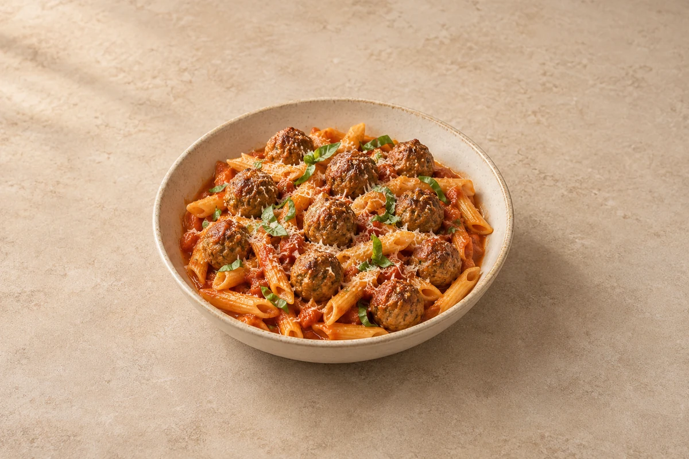

Pasta
Meatball Penne
Juicy beef and pork meatballs in a rich tomato and garlic sauce. Serves 2.
Ingredient quantities update automatically

Ingredients
Meatballs
Pasta and sauce
Method
Make the meatballs
Soak the breadcrumbs in the milk for 2 minutes. Mix gently with the remaining meatball ingredients, then shape into 10–12 small balls. Mix only until combined to keep them tender.Brown the meatballs
Heat the olive oil in a deep frying pan over a medium heat. Fry the meatballs for 5–6 minutes, turning carefully, until browned. Transfer to a plate.Start the sauce
Add the onion to the same pan and soften for 5 minutes. Add the garlic and cook for 1 minute. Stir in the tomato purée and cook for another minute.Simmer gently
Add the tomatoes and their juice, crushing them with a spoon. Stir in the oregano, optional chilli and 50 ml water. Return the meatballs, cover loosely and simmer gently for 15–20 minutes until cooked through. Stir carefully and add a splash of water if needed.Cook the penne
Meanwhile, boil the penne in salted water until just al dente. Reserve a mug of pasta water before draining.Finish and serve
Gently fold the pasta into the sauce with a splash of reserved pasta water. Stir through the basil, taste and season. Divide between bowls and finish with Parmesan.
Tips & leftovers
Storage
Cool promptly, refrigerate covered within 2 hours and eat within 48 hours.
Freezing
Freeze cooled portions for up to 2 months for best quality. Pasta softens after freezing; freezing the sauce separately gives a better result. Freeze meatballs in their sauce and cook fresh penne for a better texture.
Reheating
Reheat once in a pan with a splash of water, stirring until steaming hot throughout. Add fresh herbs or cheese after heating. Turn meatballs as they heat and check their centres are steaming hot.
Substitutions
Use all-beef mince instead of the beef-and-pork mixture. Use another short pasta shape. Choose vegetarian hard cheese if making a separate meat-free version with a suitable meatball substitute.
Keeping leftovers safe
Cool cooked leftovers in small portions and refrigerate within 2 hours. Keep the fridge at 0–5°C and the freezer around −18°C. Freeze suitable leftovers promptly. Defrost fully in the fridge and use within 24 hours. Reheat only once, until steaming hot all the way through. Follow any shorter use-by or opened-pack instructions; using older cooked ingredients does not restart their storage time.
Food-safety guidance: Food Standards Agency: chilling and freezing · reheating leftovers.